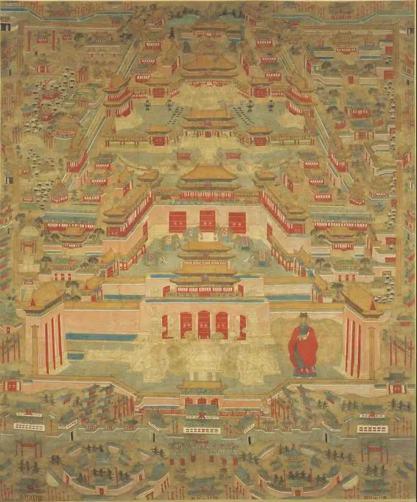
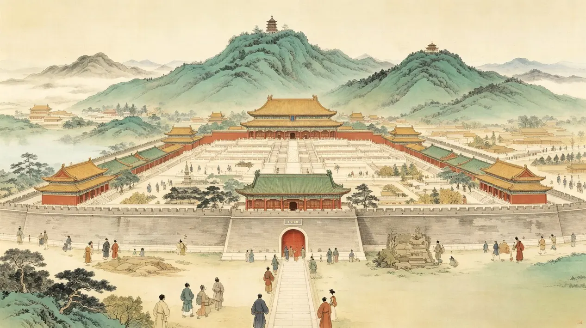
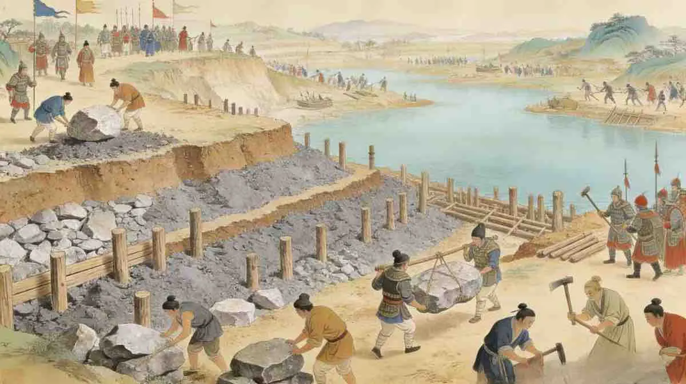
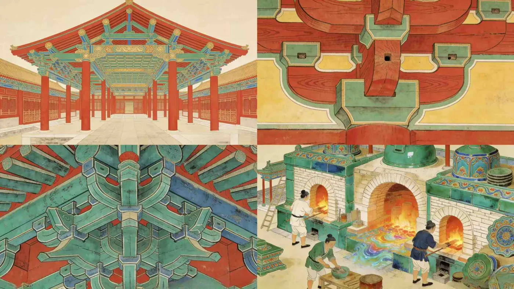
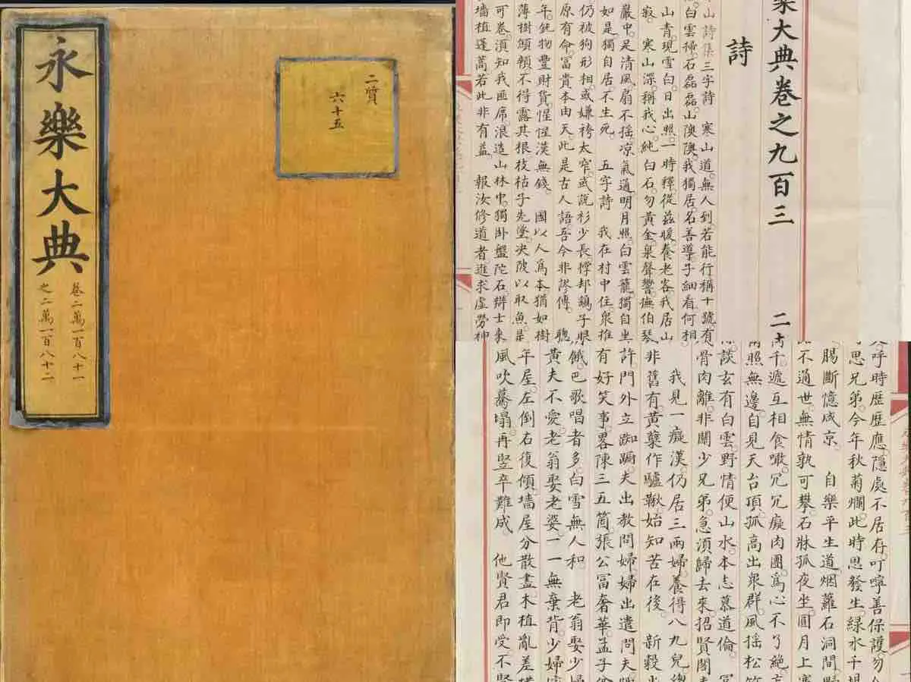
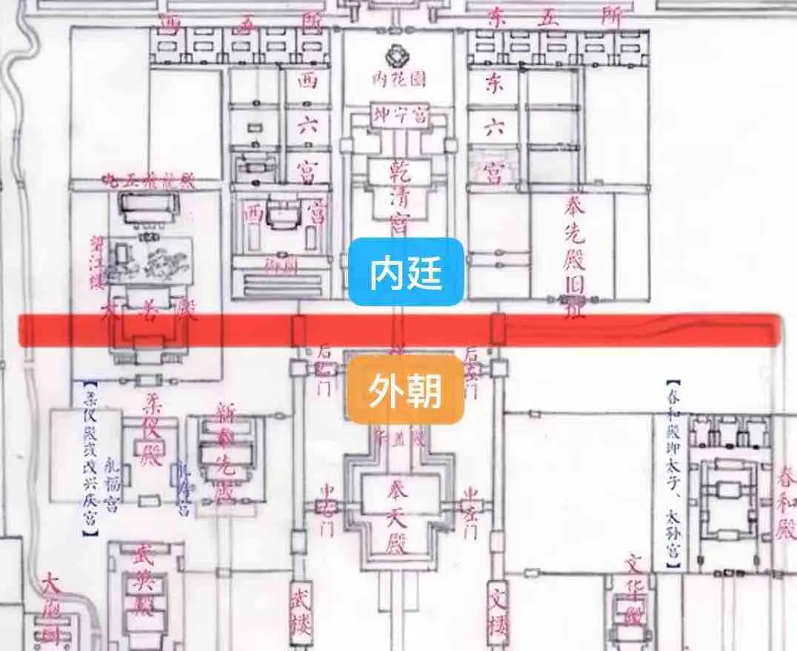
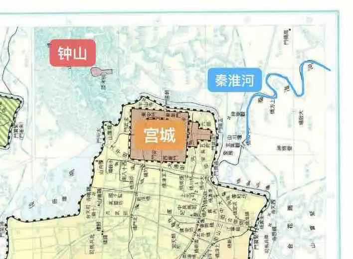
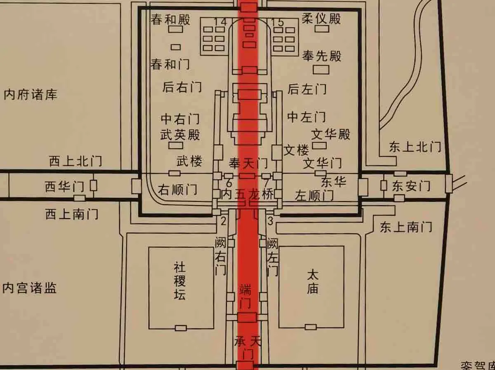

宫城总览
南京明故宫
明朝开国皇帝朱元璋于元至正二十六年（1366年）始建皇宫，洪武二十五年（1392年）基本完工。据《明史·舆服志》记载，明故宫占地约101.25万平方米，是当时中世纪世界上规模最大的宫殿建筑群，被称为"世界第一宫殿"。
宫殿由精通堪舆术的刘基设计选址，背倚钟山，面临燕雀湖，形成"背山面水"的绝佳风水格局。严格遵循《周礼·考工记》"匠人营国"的都城形制，采用"前朝后寝"的布局。
明清宫室之蓝本 明南京明故宫是北京故宫的蓝本，《明太宗实录》评价："凡庙社、郊祀、坛场、宫殿、门阙，规制悉如南京，而高敞壮丽过之。"

《大明宫殿图》
地理位置
南京市玄武区中山东路，东邻南京博物院，西邻中山门，南临中山东路，北靠富贵山
保护区划
宫城遗址保护区约29万平方米；2006年列入全国重点文物保护单位；2011年遗址公园对外开放
历史地位
中世纪世界最大宫殿群（101.25万㎡），北京故宫（72万㎡）之蓝本，"世界第一宫殿"
金陵肇建
历史地位
南京明故宫是明朝开国皇帝朱元璋于元至正二十六年（1366年）始建的皇宫，于洪武二十五年（1392年）基本完工。据《明史·舆服志》记载，明故宫占地约101.25万平方米，是中世纪世界上规模最大的宫殿建筑群，被誉为"世界第一宫殿"。明故宫的建造规制直接影响了北京故宫的形成，被《中国建筑史》誉为"明清宫室之蓝本"，是中国古代宫殿建筑发展史上的里程碑。1961年被列入江苏省文物保护单位，2006年列入全国重点文物保护单位。
建筑典范
南京明故宫严格按照《周礼·考工记》"匠人营国，方九里，旁三门"的都城形制建造，采用"前朝后寝"的传统布局。中轴对称、方正严整的规划思想对中国后世城市规划产生了深远影响。宫殿建筑采用抬梁式木构架、重檐歇山顶、黄琉璃瓦等规制，体现了中国古代建筑的最高等级。《中国建筑史》评价其"规划严谨、布局合理、技术先进"，是中国古代都城规划和宫殿建筑的集大成之作。
文化载体
明故宫见证了明朝建立、靖难之役、迁都北京等重大历史事件。1368年朱元璋在奉天殿即位称帝，建立明朝；1402年靖难之役中宫殿受损；1421年明成祖迁都北京。据《明太宗实录》记载，北京故宫"凡庙社、郊祀、坛场、宫殿、门阙，规制悉如南京，而高敞壮丽过之"。明故宫作为明代政治中心的实物见证，承载着丰富的历史信息和文化内涵。
历史沿革 · 时间轴

知识问答 · 金陵肇建
问题：明故宫的选址是谁设计的？
明故宫的选址是由明代著名政治家、科学家刘基（刘伯温）设计的。刘基精通天文、地理、堪舆之术，经过周密勘察，最终选定钟山之阳、燕雀湖畔作为宫殿基址。他运用"背山面水"的风水理念，使宫殿背倚钟山（龙脉）、前临秦淮河（水脉），形成绝佳的风水格局。
资料来源：《明史·刘基传》《中国建筑史》
问题：明故宫建造历时多久？
明故宫的建造历时26年，从元至正二十六年（1366年）开始填湖造地，至洪武二十五年（1392年）基本完工。期间历经多次扩建：洪武元年（1368年）正式迁入新宫；洪武八年（1375年）下诏改建大内宫殿；洪武二十五年（1392年）增设宫墙、建造端门。
资料来源：《明史·舆服志》《明太宗实录》
问题：靖难之役对明故宫造成了什么影响？
靖难之役（1402年）对明故宫造成了毁灭性的破坏。燕王朱棣攻破京师后，"宫中火起"，奉天殿等重要宫殿被烧毁。战后朱棣虽一度修复部分建筑，但明故宫从此元气大伤，无法恢复到洪武时期的辉煌状态。这场战争标志着明故宫作为国家政治中心地位的终结。
资料来源：《明史·太祖本纪》《中国战争史》
问题：为什么明故宫被誉为"世界第一宫殿"？
明故宫被誉为"世界第一宫殿"的原因有三：
1. 规模最大：占地约101.25万平方米，远超当时其他国家的宫殿；
2. 技术最先进：采用填湖造地、抬梁木构、琉璃烧制等多项创新技术；
3. 影响深远：是北京故宫的蓝本，深刻影响了中国五百年的宫殿建筑。
资料来源：《中国建筑史》《世界建筑史》
宫阙形制
请点击或悬浮建筑区块，了解详细介绍
请点击或悬停建筑区块，了解详情
考古实证
考古发掘历程
20世纪以来，考古工作者对明故宫遗址进行了系统发掘，陆续揭示了这座皇家宫殿的地下遗存，为研究明代宫廷建筑提供了珍贵的实物依据。
- 1932年：中央研究院对明故宫遗址进行首次科学调查
- 1956年：南京市文物保管委员会勘察午门、五龙桥遗址
- 1984年：在东华门遗址出土大量琉璃瓦当、滴水残片
- 1996年：对宫城轴线区域进行钻探，确认奉天殿台基范围
- 2006年：配合地铁施工，发掘西华门至西安门区间遗址
- 2011—2015年：遗址公园建设期间，系统清理五龙桥广场区域
- 2021年：南京博物院对宫城东北角区域进行数字化测绘
发掘面积与主要成果
历次考古发掘揭露总面积逾3.6万平方米，出土文物涵盖建筑构件、生活用品、铭文砖石等类型，为复原明故宫历史原貌提供了不可替代的第一手资料。
- 台基与柱础：奉天殿、谨身殿石砌台基保存完好，柱础排列清晰可辨
- 排水系统：金水桥下暗渠、宫城排水沟渠保存完整
- 散水石：宫殿周围散水石板铺设规整
- 御道砖：午门至奉天殿御道金砖多有存留
- 砖砌散水：谨身殿北侧保存有完整的砖砌散水遗址
- 石拱门：东华门现存三座石拱券门洞
- 木构残件：部分木梁、木枋碳化残件埋藏于原地
代表性出土文物
黄琉璃瓦当
直径约14厘米，模压龙纹，釉色纯正。印证明故宫"黄瓦朱楹"规制，出土于午门遗址区。
绿釉滴水
兽面纹滴水，釉色青绿，为祭祀建筑专用。显示明故宫严格遵循等级分色营造制度。
铭文城砖
砖侧模印产地、窑匠、监造官员姓名，如"苏州府""江宁县"等。印证《明史》所载全国各府分担烧砖的史实。
石刻柱础
汉白玉柱础，雕卷草纹。与北京故宫柱础形制一致，证明两宫营建一脉相承。
铜门钉
直径约8厘米，鼓形鎏金铜钉，九排九列（九九八十一枚）。严格遵循"朱门金钉"礼制规范。
石螭首残件
台基排水口螭首残段，印证奉天殿须弥座形制与北京故宫一脉相承的营造关系，为明代宫城排水系统的重要构件。
遗址出土文物统计
数据来源：南京市博物馆、南京博物院历年考古发掘报告
考古实证 · 知识问答
① 截至目前，明故宫遗址考古发掘总面积约为多少？
② 出土的黄琉璃瓦当主要印证了明故宫的什么建筑规制？
③ 铭文城砖上模印的信息，主要反映了什么历史信息？
④ 明故宫午门现存几孔门洞，是什么时期保存下来的？
⑤ 石螭首残件出土于哪个建筑遗址，主要起什么作用？
⑥ 铜门钉"九九八十一枚"的规制体现了什么礼制观念？
筑业煌煌
填湖造地工程
明故宫选址于燕雀湖，朱元璋征发军民工匠20余万人填湖造地，是中国古代规模最大的填湖工程之一。工程历时数年，挖掘土石方数千万立方米，最终将燕雀湖大部分区域填为平地。这一壮举展现了明代初期强大的国家动员能力。
- 采用巨石、木桩、灰土分层夯筑
- 地基深度达数米，确保稳固
- 工程规模在当时世界罕见
- 体现明代工程技术的先进水平
文献来源：《明史·舆服志》

建筑技术创新
明故宫建造采用了多项先进的建筑技术，代表了明代初期中国建筑的最高水平。其规划布局严格遵循儒家礼制思想，采用中轴线对称设计，体现了皇权的至高无上。建筑工艺上融合了木构、砖石、琉璃等多种材质，展现了当时工匠的精湛技艺。
- 抬梁式木构架：实现大跨度宫殿空间
- 斗拱系统：结构承重与装饰功能统一
- 榫卯结构：不用铁钉，结构稳固
- 琉璃烧制：高温釉彩技术成熟
文献来源：《中国建筑史》

材料运输工程
明故宫建造所需材料来自全国各地，运输工程规模浩大。这些材料通过水路、陆路等多种运输方式汇集南京，形成了庞大的物资供应链，展现了明代完善的物流体系。
- 木料：来自湖广、四川深山，优质楠木、杉木
- 石料：取自南京青龙山、大连等地
- 琉璃瓦：聚宝山（今雨花台）设窑烧制
- 金砖：来自苏州陆慕御窑
文献来源：《明太宗实录》
匠造薪传
刘基（1311-1375）
明故宫选址设计师
刘基，字伯温，浙江青田人，明朝开国功臣，杰出的政治家、文学家、科学家。精通天文、地理、数学、历法，运用科学方法为明故宫选址规划。
主要贡献：
- 运用科学方法选址，背倚钟山、面临燕雀湖
- 设计"背山面水"的城市格局
- 规划宫殿中轴线和功能分区
- 确立明代宫殿建筑的基本规制
"博通经史，于书无不窥，尤精象纬之学。"
—— 《明史·刘基传》
蒯祥（1397-1481）
明代著名建筑师
蒯祥，江苏吴县人，明代杰出的建筑设计师和工匠大师。继承南京明故宫营造技艺，参与北京故宫建造，被誉为"蒯鲁班"。
主要贡献：
- 继承南京明故宫营造技艺传统
- 参与北京故宫设计与建造
- 创新木作结构技术
- 培养大批建筑工匠人才
技艺精湛，善于创新，被时人誉为"蒯鲁班"。
—— 《明史·职官志》
工匠群体与工匠精神
明故宫建造征发军民工匠20余万人，集合全国最优秀的建筑人才。工匠分工明确，专业精细。
工匠分工：
- 木作：梁架、斗拱、门窗制作
- 石作：台基、石柱、雕刻加工
- 瓦作：墙体砌筑、屋面铺瓦
- 彩画作：梁枋彩绘、图案装饰
工匠精神传承：
- 精益求精：追求完美的工艺品质
- 严谨细致：精确的尺寸和结构
- 传承创新：在传统基础上创新技术
- 协作精神：大规模工程协作能力
文献来源：《明史·职官志》《中国科学技术史》
营法典籍
《营造法式》
北宋·李诫著（1103年）
中国古代最完整的建筑技术专著，详细记载建筑规制、工料定额、构件尺寸，包含大量建筑图样。
主要内容：
- 建筑制度与规范
- 构件尺寸标准
- 工料定额计算
- 建筑图样与做法
明故宫建造的重要技术参考
《天工开物》
明·宋应星著（1637年）
明代科学技术百科全书，详述砖瓦烧制、木材加工、冶金铸造等工艺，与明故宫同时代的技术文献。
主要内容：
- 砖瓦烧制工艺
- 木材加工技术
- 冶金铸造方法
- 建筑材料制作
记录明代建筑材料制作方法
《工程做法则例》
清代工部编（1734年）
清代官式建筑技术标准，继承明代营造传统，详细记录建筑构件尺寸、施工规范、工料计算。
主要内容：
- 建筑构件尺寸标准
- 施工规范与流程
- 工料计算方法
- 建筑等级制度
体现明故宫建筑规制传承
木石匠心
木作工艺
▸ 榫卯结构
据《营造法式》记载，明故宫采用复杂的榫卯连接方式，不用一颗铁钉，结构稳固异常。常见榫卯类型包括：
- 直榫：用于一般构件连接
- 燕尾榫：用于需要拉结的部位，俗称"银锭榫"
- 透榫：贯穿构件的榫头，结构牢固
▸ 木材选择
- 楠木：耐腐防虫，首要用材，产自湖广、四川
- 杉木：耐水耐腐，用于潮湿部位
- 银杏木：纹理美观，用于装饰构件
▸ 梁架结构
明故宫采用抬梁式木构架。主要特点：
- 七架梁：用于一般殿堂，跨度较大
- 五架梁：用于次要建筑
- 斗拱：层层出挑，承托屋面，兼具装饰功能
砖石与琉璃工艺
▸ 砖石工艺
明故宫城墙采用条石基础、大城砖砌筑。据考古发掘：
- 城砖：尺寸约40×20×10厘米，重约15公斤
- 砌筑方法：采用"一丁一顺"法，稳固耐久
- 灰浆：糯米汁加石灰（比例约1:3），坚固异常
▸ 台基雕刻
宫殿台基为汉白玉须弥座：
- 须弥座：层层内收，形似山峦，象征佛座
- 螭首：排水口雕成龙头形状
- 栏板望柱：雕刻龙凤云纹，技法精湛
▸ 琉璃工艺
黄色琉璃瓦为皇帝专用：
- 琉璃窑：在聚宝山（今雨花台）设窑烧制
- 烧制温度：高达1100-1200摄氏度
- 色彩等级：黄色为帝用，绿色为王府用
彩画与装饰工艺
▸ 彩画工艺
据《营造法式》卷十四记载，明代彩画主要类型：
- 和玺彩画：龙凤为主题，皇帝专用
- 旋子彩画：旋花纹饰，用于次要建筑
- 苏式彩画：山水花鸟，用于园林建筑
- 色彩：以青绿为主，配以朱红、金粉
▸ 金属装饰
- 鎏金：铜构件表面鎏金，金光灿烂
- 镏金：殿脊、门钉使用镏金工艺
- 铁件：门环、包叶等铁件，锻造精细
- 铜鹤：陈设于宫殿前，寓意吉祥
文献来源：《明史·舆服志》《营造法式》《中国建筑史》（梁思成著）
宫苑文脉
帝王文治

明故宫是明初文治教化的核心舞台。朱元璋在此定儒兴学、规范科举，以程朱理学为纲重建文化秩序；朱棣下诏编纂《永乐大典》，汇通古今典籍，彰显盛世文治。宫城之中，奉天殿颁政令、谨身殿集文士，将权力与教化融为一体，承载"以儒治国、以文化民"的政治理想。
前朝后寝

外朝理政，内廷居住，严格遵循"前堂后寝"礼制分区。外朝为皇帝处理政务、举行大典、朝会群臣的核心场所；内廷为帝后起居、皇室生活的私密区域，功能界限清晰，体现"家国分治、礼序井然"的传统布局思想。
天人合一

背倚钟山（龙脉），前临秦淮河（水脉），依山傍水的选址契合"藏风聚气"的风水理念。宫城与自然山水相融，将天地之道融入都城营建，体现古人"天人合一"的哲学思想与"顺天应人"的营建智慧。
礼制中正

居中为尊，轴线承礼，以南北中轴线为核心骨架，奉天殿踞于正中，东西建筑对称排布。严格的对称布局彰显帝王正统地位，将"中正有序、尊卑有别"的封建礼制具象化，是中国古代都城礼制文化的典范。
宫城互鉴
南京明故宫 vs 北京故宫
| 对比项 | 南京明故宫 | 北京故宫 |
|---|---|---|
| 建造时间 | 1366—1392年（明初） | 1406—1420年（明永乐） |
| 占地面积 | 约101.25万平方米 | 约72万平方米 |
| 城墙周长 | 约3.45—3.5公里 | 约3.428公里 |
| 主要建筑 | 奉天殿、华盖殿、谨身殿等 | 太和殿、中和殿、保和殿等 |
| 保存状况 | 仅存遗址 | 保存完整，世界文化遗产 |
| 历史地位 | 北京故宫蓝本，"世界第一宫殿" | 明清两代皇宫，世界文化遗产 |
"凡庙社、郊祀、坛场、宫殿、门阙，规制悉如南京，而高敞壮丽过之。"
——《明太宗实录》
奉天殿 vs 太和殿 · 建筑形制对照
奉天殿（今南京明故宫）与太和殿（今北京故宫）分别作为两座皇宫的正殿，是各自时代建筑艺术的最高代表，亦是中国古代宫殿建筑的巅峰之作。下表从开间、进深、斗拱、屋顶等维度进行逐项对比：
| 对比维度 | 奉天殿（南京明故宫） | 太和殿（北京故宫） | 差异分析 |
|---|---|---|---|
| 建造年代 | 洪武元年（1368年）始建 洪武二十五年（1392年）改建 |
永乐四年（1406年）始建 永乐十八年（1420年）完工 康熙三十四年（1695年）重建 |
奉天殿早于太和殿约52年；太和殿经历过火灾重建，建筑技术更为成熟 |
| 开间（面阔） | 面阔九间，通面阔约59.94米 （每间约6.66米） |
面阔十一间，通面阔约64.12米 （每间约5.83米） |
太和殿增加两间，进深方向扩展一间；间数增加体现宫殿体量的扩大与礼制等级的提升 |
| 进深 | 进深五间，通进深约35.5米 （七架梁结构） |
进深五间，通进深约37.2米 （九架梁结构） |
两者进深间数相同，太和殿通进深略大；太和殿采用九架梁，屋架承载力更强 |
| 柱网布局 | 内槽七列柱 外槽前后各四根廊柱 金柱直通上层梁架 |
内槽七列柱（稍密） 外槽前后各六根廊柱（加宽） 减柱造：减去内槽部分金柱 |
太和殿采用"减柱造"，室内空间更开阔；廊柱加密，檐出更深，视觉更宏伟 |
| 斗拱形制 | 品字科斗拱 出跳较少（约二跳） 斗拱个体较大，承重功能为主 装饰性相对质朴 |
溜金斗拱（内斜） 出跳较多（三至四跳） 斗拱个体较小，装饰性强 内拽翘嘴向上挑起 |
明初斗拱尚保留较多承重功能；清代太和殿斗拱趋于装饰化。两者均用七踩斗拱（最高等级），体现了明代官式建筑规制的延续 |
| 斗口尺寸 | 斗口约15厘米 （明初营造尺，尺约32厘米） |
斗口约10厘米 （清工部营造尺，尺约32厘米） |
奉天殿斗口明显大于太和殿，构件截面更大，整体风格浑厚有力；太和殿斗口缩小，构件趋于精巧细致 |
| 屋顶规制 | 重檐庑殿顶（最高等级） 正脊约高9.9米 黄色琉璃瓦覆盖 |
重檐庑殿顶（最高等级） 正脊约高12.8米 黄色琉璃瓦+脊兽十件（最高规制） |
两殿屋顶规制相同，均为重檐庑殿（古代建筑最高形制）。太和殿正脊更高，脊兽数量达到清代最高等级（十件仙人走兽），体现礼制的进一步强化 |
| 脊饰规格 | 龙吻（正脊两端） 垂脊仙人+龙凤垂兽 |
龙吻（正脊两端，高3.4米） 垂脊：仙人+龙、凤、狮、天马、海马、狻猊、押鱼、獬豸、斗牛、行什（共十件） |
太和殿垂脊仙人走兽达十件，为中国古代建筑脊饰之最；"行什"（雷震子形）为太和殿独有，奉天殿无此配置 |
| 台基形制 | 三层台基 汉白玉须弥座 各层高度约1.6米 螭首（龙首）排水口 |
三层台基（三层须弥座） 汉白玉须弥座 总高约8.13米（三层合计） 三层均设螭首排水口1141个 |
台基规制一致，均为"三出阶"；太和殿台基更加宽大，三层合计更高，视觉压迫感更强；三层满布螭首为太和殿独有特征 |
| 殿内空间 | 设屏风宝座于殿内正中 无减柱，空间被分隔为多个区域 殿内不施天花者居多 |
宝座设于金銮殿台上 采用"减柱造"，室内宽敞通透 设井口天花（藻井），金龙藻井居中 |
太和殿室内空间更为开阔，整体感更强；井口天花（藻井）装饰在奉天殿时期尚未普遍，成为清代宫殿的标志性特征 |
| 彩画等级 | 和玺彩画为主流 龙凤纹样为主 以青绿、朱红为主色 |
金龙和玺彩画（最高等级） 满贴金箔，金龙遍布梁架 以青绿为底，金龙为主 |
彩画等级一致（均为和玺彩画），太和殿为"金龙和玺"——全部龙纹均以金箔贴饰，工艺更为奢华，金使用量大幅增加 |
| 今日状态 | 仅存遗址 台基柱础考古可辨 地上建筑已无存 |
完整保存 作为故宫博物院核心建筑开放 世界文化遗产 |
两殿命运迥异：奉天殿毁于靖难之役及后续战乱，仅余地下遗存；太和殿经历重建，至今屹立，为明清两代皇权象征 |
奉天殿的历史价值
奉天殿是明代皇权的开端，见证了朱元璋开国称帝的庄严时刻。作为"世界第一宫殿"的正殿，它确立了明代宫殿建筑的基本范式：九间面阔、重檐庑殿顶、品字科斗拱、和玺彩画——这些规制被北京故宫完整继承。虽已化为遗址，但其建筑思想深刻影响了中国此后五百年的宫殿建筑。
太和殿的集大成
太和殿是清代工匠在明代营建基础上集大成之作：在继承奉天殿规制的同时，将建筑体量推向极致——十一间面阔、十件脊兽、三层螭首台基、金龙和玺彩画，处处体现"普天之下，唯我独尊"的皇权美学。两殿对照，既可见明代"务实刚健"与清代"繁复壮丽"的不同建筑风格，也印证了"北京故宫规制悉如南京"的历史定论。
谨身殿 vs 保和殿 · 外朝第三殿对照
谨身殿（南京）与保和殿（北京）是外朝三大殿中最末一进的两座建筑，功能相近而形制各异。谨身殿在靖难之役中被毁后未再重建；保和殿则延续至今，承载了从科举殿试到筵宴的多元功能，见证了明清两代宫廷文化的变迁。
| 对比维度 | 谨身殿（南京明故宫） | 保和殿（北京故宫） | 差异分析 |
|---|---|---|---|
| 建造年代 | 洪武元年（1368年）始建 洪武二十五年（1392年）重建 |
永乐十八年（1420年）建成 屡遭火灾，康熙五十九年（1720年）重修 |
两殿建造时间相差约52年；保和殿经历多次火灾重建，建筑形制已与原貌有较大出入 |
| 建筑规模 | 面阔七间，通面阔约46.2米 进深五间，约29.4米 |
面阔九间，通面阔约57.6米 进深五间，约27.6米 |
保和殿面阔扩大至九间，形制升级，与太和殿呼应；谨身殿面阔较小，体现明初建筑规制尚未完全成熟 |
| 屋顶规制 | 重檐歇山顶 黄色琉璃瓦 |
重檐歇山顶 黄色琉璃瓦 + 脊兽六件 |
两殿屋顶规制相同（重檐歇山为第二等）；保和殿脊兽六件，略低于太和殿十件，体现严格的等级梯度 |
| 斗拱形制 | 品字科斗拱 五踩斗拱，出跳两层 |
溜金斗拱 六踩斗拱，内拽起翘 |
保和殿斗拱出跳增加一踩，内拽起翘的溜金做法是清代斗拱特征，谨身殿则保留了更多明初古制 |
| 建筑功能 | 册封太子、颁布诏令 接见藩属使臣 |
科举殿试（清代主要功能） 赐宴外藩、王公大臣 公主下嫁受礼 |
功能重心从政治仪式转向科举文化；保和殿的"殿试"功能使这座建筑成为中国科举史的实物见证 |
| 今日状态 | 仅存台基遗址 柱础位置考古可辨 |
完整保存 对公众开放 |
与奉天殿一样，谨身殿的命运再次印证了南京明故宫"形制先驱、遗存断绝"的历史遗憾 |
午门 · 南北两座宫城正门
午门是宫城正门，位于宫城南北中轴线的最南端，是皇帝颁发诏令、举行大典的重要场所。南京午门是北京午门的直接蓝本，两者形制一脉相承。南京午门现存三孔门洞，是明故宫保存最为完整的地上遗存之一。
| 对比维度 | 午门（南京明故宫） | 午门（北京故宫） | 差异分析 |
|---|---|---|---|
| 建造年代 | 洪武元年（1368年） 洪武二十五年（1392年）增建两阙 |
永乐十八年（1420年） 康熙六十一年（1722年）大修 |
两座午门建造时间相差约52年；北京午门在清代有多次大修 |
| 门洞形制 | 三孔门洞 中门为御道（皇帝专用） 左右掖门各一 |
三孔门洞 中门为御道（皇帝专用） 左右掖门各一，平面呈"凹"字形 |
门洞数量完全一致，奠定了"三门洞+掖门"的午门基本范式；北京午门因增建城台两侧观礼廊，形成"凹"字形平面，造型更为宏伟 |
| 城台高度 | 城台高约10米 墩台宽度约60米 |
城台高约12.6米 墩台宽度约126米，进深约65米 |
北京午门城台更为高阔，特别是两侧观礼廊的加建，使其体量约为南京午门的两倍，视觉冲击力更强 |
| 屋顶规制 | 五凤楼形制 重檐庑殿顶 黄色琉璃瓦 |
五凤楼形制 重檐庑殿顶（五门殿） 黄色琉璃瓦 |
屋顶规制完全一致，均为重檐庑殿顶（五凤楼形制）；"五凤楼"之名源于正殿与两侧廊庑形成的五组屋脊，形如五凤展翅 |
| 两侧观礼廊 | 无两侧观礼廊 两侧为城墙直接收束 |
两侧各设13间观礼廊 （共计26间） 用于朝贺时王公大臣列队 |
两侧观礼廊是北京午门的标志性特征，为清代增设；南京午门无此配置，是两者最显著的形制差异 |
| 历史功能 | 颁布诏书（明代主要功能） 廷杖刑罚（"推出午门"） 接见藩属朝贡使臣 |
颁朔布政（每月朔日颁诏） 廷杖刑罚 接见外藩朝贡 大战告捷献俘礼 |
功能基本一致；北京午门增加了"大战献俘"之礼，体现了清代作为大一统帝国的军事庆典传统 |
| 今日状态 | 三孔门洞基本保存 城楼已毁 南京午门为遗址公园核心遗迹 |
完整保存 对公众开放（可登城楼参观） |
南京午门是现存最早、规制最完整的明代午门实物，对研究明代城门建筑具有重要基准价值 |
华盖殿 vs 中和殿 · 殿中奇葩
华盖殿（南京）与中和殿（北京）是外朝三大殿中形制最为独特的两座——它们体量最小，却扮演着不可替代的角色。华盖殿是皇帝举行大典前更衣、备宴的场所；中和殿则是皇帝登基前的临时御座，并用于阅读殿试试卷。两殿一南一北，形制相近，共同诠释了明代官式建筑的精致美学。
| 对比维度 | 华盖殿（南京明故宫） | 中和殿（北京故宫） | 差异分析 |
|---|---|---|---|
| 建造年代 | 洪武元年（1368年） 洪武八年（1375年）重建 |
永乐十八年（1420年） 康熙五十二年（1713年）重建 |
华盖殿在洪武八年曾经历一次重要重建（"下诏改建大内宫殿"），其规制在此时基本定型 |
| 建筑形制 | 方形攒尖顶 面阔约24米，进深约24米 近似正方形平面 覆黄色琉璃瓦 |
方形攒尖顶 面阔、进深各约15米 正方形平面 覆黄色琉璃瓦 |
两者形制极为相近——均为方形平面+攒尖顶，为三大殿中最小的两座；华盖殿体量约为中和殿的2.5倍，显示明初对这座特殊殿堂的重视程度更高 |
| 屋顶规制 | 方形圆攒尖顶 顶部立铜铸镀金圆顶 （象征天圆地方） 脊兽配置相对简略 |
方形圆攒尖顶 顶部立铜铸鎏金宝顶 正方形殿身+圆形攒尖相交 无正脊，设垂脊五条 |
两殿均以"方形圆攒尖"表达"天圆地方"的宇宙观；华盖殿宝顶镀金，中和殿宝顶鎏金，均以金属圆顶象征天穹 |
| 空间特征 | 殿内空间不大 顶部开圆形天窗 光线从穹顶洒落 营造神圣氛围 |
殿内正中设宝座 面积仅约190平方米 四面隔扇门，采光充足 四面可通行的独立小殿 |
中和殿是紫禁城中最小的大殿，但"小而独立"的设计独树一帜；华盖殿则通过圆形天窗制造神圣光感，设计思路各有侧重 |
| 建筑功能 | 御门听政前更衣 赐宴藩王使臣 大典前祭祀准备 |
登基前先帝灵前受印 阅视殿试试卷 赐宴前阅览贺表 接见外国使节前准备 |
两殿功能相近——均为"典礼前准备空间"；中和殿增加了"阅视殿试试卷"功能，与清代科举制度的繁荣有关 |
| 今日状态 | 仅存台基遗址 方形基址可辨 |
完整保存 位于太和殿与乾清宫之间 |
华盖殿以遗址形式存在，考古揭示了方形攒尖顶的基址范围；中和殿则以其小巧玲珑的独特造型，成为故宫建筑群中最具辨识度的小殿 |
宫城互鉴 · 判断测验
点击判断正误，了解两座宫城的建筑与历史关系
① 明故宫占地面积比北京故宫更大。
② 北京故宫的建造规制完全独立于明故宫，没有继承关系。
③ 奉天殿与太和殿均为"重檐庑殿顶"，属于古代建筑屋顶最高等级。
④ 明故宫与北京故宫的午门均采用"五凤楼"形制，为重檐庑殿顶。
⑤ 华盖殿与中和殿均为方形平面、攒尖顶的特殊殿堂形制。
⑥ 太和殿脊兽共十件，为清代建筑脊饰最高规制，这一配置在奉天殿时代已有先例。
⑦ 明故宫的建造历时约26年，征发工匠超过20万人。
⑧ 谨身殿与保和殿均采用重檐歇山顶，为外朝三大殿中等级第二的屋顶规制。
残垣守望
地面遗存
- 午门：三孔门洞基本保存
- 东华门：门洞保存较为完整
- 西华门：门洞保存较为完整
- 奉天门：仅存遗址
- 五龙桥：石桥保存完好
- 石柱础：散落各处，部分保护
保护历程
- 1956年：列为江苏省文物保护单位
- 1988年：列入全国重点文物保护单位
- 2006年：明故宫遗址列入国家级保护
- 2011年：明故宫遗址公园对外开放
遗址公园
明故宫遗址公园占地约29万平方米，主要展示午门、东华门、西华门、五龙桥等历史遗迹，集历史教育、文化休闲于一体。
保护意义
明故宫遗址是南京历史文化的重要象征，保护好这些遗迹对于研究明代历史、建筑和文化具有重要意义。遗址公园的建立既保护了文物，又为市民提供了休闲文化空间，实现了文化遗产保护与城市发展的和谐统一。
游览指南
开放时间
- 旺季（4月—10月）：08:00—18:00
- 淡季（11月—3月）：08:30—17:30
- 闭园时间：各出入口准时关闭
- 遗址公园：免费开放（午门广场区）
- 闭馆日：周一闭园维护（节假日除外）
⚠️ 遇重大活动或恶劣天气可能临时闭园，建议出行前查阅官方公告
交通路线
- 地铁：2号线「明故宫站」2号口出，步行约3分钟即达
- 公交：5路、9路、25路、34路、65路「明故宫站」下车
- 自驾：导航搜索"明故宫遗址公园"，周边停车场参考：中山东路沿线停车位（收费）
- 共享单车：中山东路人行道设有停车点
地铁2号线可达，与南京博物院仅一站之隔，可安排联游
票务信息
- 午门广场区：免费免预约
- 遗址公园核心区：免费开放
- 讲解服务：可租赁自助语音导览设备（凭身份证）
- 团体预约：20人以上团体可提前联系管理处预约免费讲解
南京旅游集团官方公众号可查询实时客流与活动信息
游览路线推荐
经典精华游 · 约60分钟
午门（城楼遗址）→ 五龙桥 → 东华门遗址 → 城墙遗址步道 → 西华门遗址 → 遗址公园广场
适合：时间有限、首次到访游客
深度文化游 · 约120分钟
午门广场 → 五龙桥 → 东华门城楼 → 宫城遗址展示区 → 石柱础遗迹 → 遗址陈列馆（室内展厅）
适合：历史爱好者、研学团队
文博联游 · 约180分钟
明故宫遗址公园（60min）→ 步行至南京博物院（10min）→ 南京博物院主馆（90min）→ 中山陵风景区（需单独安排）
适合：文化一日游、亲子家庭
📌 游览贴士
- 午门城楼可登高远眺，视野极佳，拍照打卡推荐
- 遗址公园内绿植丰富，春夏季节遮荫有限，建议携带遮阳伞
- 东华门城楼内侧设有微型展览室，展陈历年出土文物
- 五龙桥北侧石栏保存完好，为明代原构，请勿攀爬
- 遗址公园周边餐饮较少，可前往中山东路商业区或瑞金路用餐
🔗 周边联游
- 南京博物院：步行约10分钟，馆藏明代文物丰富，免费预约制
- 中山陵风景区：地铁2号线至苜蓿园站，约25分钟
- 梅花山·明孝陵：地铁2号线至苜蓿园站，世界文化遗产
- 六朝博物馆：总统府旁，步行约15分钟
- 郑和纪念馆：太平公园内，地铁3号线可达
💡 温馨提示：明故宫遗址公园为开放式遗址公园，部分区域地面不平，请注意安全。建议穿着舒适平底鞋，配合语音导览或扫码讲解，体验更为丰富。更多信息请关注"南京市文旅局"官方平台。
数营志略
项目背景
"金陵故宫梦"数字营造项目旨在通过现代数字技术重现南京明故宫的历史风貌，传承和弘扬中华优秀传统文化。
项目目标
- 通过数字技术重现明故宫历史风貌
- 展示明故宫的历史文化和建筑艺术
- 增强公众对文化遗产的保护意识
- 传承中华优秀传统文化
项目意义
南京明故宫是中国古代宫殿建筑的杰作，承载着丰富的历史信息和深厚的文化内涵。通过本项目的数字重现，让更多人了解和关注这一重要的文化遗产，感受中华文明的魅力，增强文化自信。
参考文献资料
一、权威史籍
- 《明史》（清·张廷玉等撰）
- 《明太宗实录》
- 《明史·舆服志》
- 《明史·刘基传》
- 《明史·职官志》
二、古代建筑著作
- 《营造法式》（北宋·李诫著）
- 《天工开物》（明·宋应星著）
- 《工程做法则例》（清代工部编）
- 《周礼·考工记》
- 《明会典》
三、学术著作
- 《中国建筑史》（梁思成著）
- 《中国古代建筑史》（傅熹年著）
- 《中国科学技术史》（李约瑟著）
- 《中国古建筑图解》（楼庆西著）
- 《南京明故宫遗址考古研究》
四、官方机构资料
- 南京市文物局官方资料
- 江苏省文物保护单位档案
- 全国重点文物保护单位记录
- 南京博物院藏品与研究资料
- 南京市博物馆考古档案
特别说明：本网站所引用的历史事件、建筑数据、科技成就等均来源于上述权威文献资料。所有史料均经过严格考证，力求做到数据真实可靠。本网站内容聚焦于建筑技术、科学家精神、建筑著作和营造技艺，弘扬中华优秀传统文化。